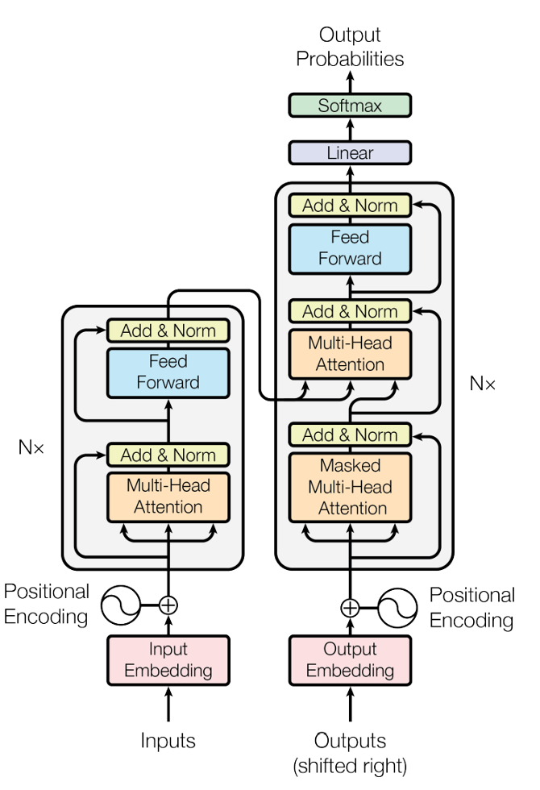

NLP 任务#
自然语言处理#
自然语言处理（Natural Language Processing, NLP）是人工智能和计算机科学中的一个重要领域，旨在让计算机能够理解、分析和生成人类的自然语言简单来说，自然语言处理的目标就是让计算机“读懂”人类的文字或语言，并执行有意义的任务。例如，我们日常使用的智能助手（如 Siri）、机器翻译工具（如谷歌翻译）、聊天机器人，以及自动摘要和搜索引擎等，背后都运用了自然语言处理技术。
NLP 的研究范围既涵盖让计算机理解语言（将人类语言转化为计算机可以处理的形式），也涉及让计算机生成语言（将计算机的数据转化为人类可读的表述）。为实现这些目标，NLP 包含多个子领域和步骤，例如：对文本的预处理（分词、词性标注等）、句法分析、语义理解，以及最后的语言生成等。
NLP 的典型应用非常广泛，包括机器翻译（如将中文翻译成英文）、文本分类（例如垃圾邮件检测）、对话系统（如客服聊天机器人）、信息抽取（如从文本中提取人名、地点）、语音识别与合成（将语音转换为文本或反之）等。在各行各业中，只要涉及到文本或语音数据，都可能用到 NLP 技术。
常见NLP任务#
文本分类 (Text Classification)#
文本分类是指将一段文本归类到预定义的类别中。这个类别可以是新闻的主题（例如体育、财经、科技）、邮件是否为垃圾邮件，或用户评论的类型等。文本分类的关键在于提取文本中的特征并训练模型进行判断。比如，在垃圾邮件检测中，我们可以将邮件内容表示成特征向量，使用机器学习模型判断该邮件是“垃圾”还是“正常”。又例如，对微博或论坛帖子进行分类，可用于内容审核或个性化推荐。在实际应用中，文本分类技术被广泛用于垃圾邮件过滤、舆情分析、主题分类等场景。
主题建模（Topic Modeling）#
主题建模旨在从大量文本中自动发现隐藏的主题。例如，给定一堆新闻文章，主题建模可以识别出“体育”“政治”“科技”等主题，并将文章分配到对应主题。常用算法包括 LDA（Latent Dirichlet Allocation）。主题建模在文档聚类、推荐系统和内容分析中有广泛应用。
情感分析 (Sentiment Analysis)#
情感分析是文本分类的一种特殊形式，目标是判断文本所表达的主观情感倾向，通常分为正面、负面或中性。情感分析常用于分析产品评论、电影影评、社交媒体上的帖子等，以了解用户对某个话题或产品的态度。例如，一条商品评价“这款手机的电池续航太差了”很明显是负面情绪，而“客服解决问题很迅速，我非常满意”则是正面情绪。通过情感分析，企业可以大规模地了解用户反馈（如正面评价比例、常见抱怨），以改进产品或服务。情感分析在市场调研、舆情监控和用户满意度调查等方面有着重要应用。
文本纠错 (Spelling or Grammatical Error Correction)#
文本纠错（Spelling or Grammatical Error Correction）旨在自动检测和纠正文本中的拼写或语法错误。在实际应用中，文本纠错广泛运用于办公软件（例如 Word 提供的拼写检查功能）、搜索引擎（对用户的搜索关键词进行拼写纠正）以及社交媒体的输入法联想等。现代纠错系统通常结合语言模型和上下文信息：模型会在预测下一个词时，判断当前词是否有误，并给出最可能的修正结果。例如，将“今天天气真糟糕呀！”错误写成“今天天气真遭糕呀！”，系统需要识别到“遭糕”是拼写错误并将其纠正为“糟糕”。
命名实体识别 (Named Entity Recognition, NER)#
命名实体识别（Named Entity Recognition, NER）是指从文本中识别出具有特定意义的实体，并将其分类到预定义的实体类型中，例如人名、地名、组织机构名、时间、数值等。举例来说，在一句话中“马云创立了阿里巴巴”，命名实体识别需要将“马云”识别为“人名”，将“阿里巴巴”识别为“组织机构”。NER 在信息抽取、信息检索、关系抽取等任务中有着重要应用，例如新闻事件分析、法律文本处理、医学文献分析等，都需要先识别出关键实体才能进一步挖掘关系和信息。
机器翻译 (Machine Translation, MT)#
机器翻译旨在将一种语言的文本自动翻译成另一种语言。早期的机器翻译系统多采用基于规则的方法，将源语言按照预先设定的规则映射到目标语言。现代机器翻译主要依赖统计方法和神经网络，例如著名的神经机器翻译（NMT）技术。经典案例有谷歌翻译、百度翻译等在线翻译服务：用户输入中文句子，系统会自动生成等价的英文句子，反之亦然。机器翻译需要解决词语选择和句子结构的差异等问题，例如将“今天天气很好”翻译成英文应得到 “The weather is nice today.”。如今基于 Transformer 的模型，大幅提升了翻译质量。
问答系统 (Question Answering, QA)#
问答系统（Question Answering）是一种能够自动回答用户用自然语言提出的问题的系统。这类系统需要理解用户的问题，并从知识库或给定的文本中找到答案。问答系统有两种主要形式：一种是开放域问答，比如用户问“世界上最高的山峰是哪座？”，系统从维基百科等海量知识中找到答案“珠穆朗玛峰”；另一种是阅读理解式问答，即给定一段文章，然后回答与文章内容相关的问题，例如阅读一篇故事后回答“主角是谁？”。IBM 的 Watson 系统就是开放域问答的著名例子，它在 quiz 问答比赛中打败了人类选手。现代问答系统结合了信息检索、自然语言理解和生成技术，能够用于智能客服、在线助手等场景，为用户提供精准的信息服务。
自动摘要 (Text Summarization)#
自动摘要（Text Summarization）任务旨在让计算机从一篇长文本中自动生成简短的摘要，其内容能够覆盖原文的重要信息。自动摘要可以分为两类：抽取式摘要和生成式摘要。抽取式摘要直接从原文中挑选重要的句子或片段拼接而成，而生成式摘要则使用生成模型，根据原文内容创造出新的精简句子。举例来说，对于一篇描述科技新闻的文章，自动摘要程序可以输出几句话，概括文章的主要内容（比如事件发生了什么、涉及哪些公司等），方便读者快速获取要点。自动摘要技术在新闻聚合、文档摘要、学术论文摘要生成等方面很实用，能够帮助人们应对信息过载。
自然语言处理的技术演变#
NLP 发展至今经历了多个阶段，从早期基于规则的系统，到统计学习方法，再到机器学习和神经网络方法，直至如今盛行的深度学习Transformer模型。
早期基于规则的方法#
在 NLP 的早期（大约20世纪中期直到80年代），大多数语言处理系统都是基于规则（Rule-based）的。这些系统由语言学家和工程师手工编写大量规则，例如语法规则、词形变化规则以及包含常见词汇、短语的词典。一个典型的例子是最早的机器翻译和对话系统：工程师为源语言到目标语言编写转化规则，或者为对话系统设计一组模式和响应。例如，1960年代的“Eliza”程序就是基于模式匹配规则进行简单对话的聊天机器人。规则方法的优点是可解释性强（每个输出都有对应的规则），但缺点也很明显：规则编写耗时费力，覆盖面有限，难以应对语言的多样性和模糊性。当遇到规则库中未包含的语言现象时，系统往往表现不佳。随着文本数据的增加和计算能力提升，研究者开始意识到需要更加自动化和数据驱动的方法来替代纯人工规则。
统计学习方法#
从1980年代后期到1990年代，NLP 进入了统计学习阶段。这一时期的特点是使用大规模语料库，从数据中统计出语言现象的规律，构建概率模型来处理语言任务。典型的技术包括 n-gram 语言模型、隐马尔可夫模型（HMM） 和 条件随机场（CRF） 等。例如，n-gram 模型通过计算连贯文本中 n 个连续单词出现的概率，来预测下一词或评估句子通顺度，用于拼写校正、输入法联想等。HMM 则被广泛应用于词性标注（给每个单词自动加上名词、动词等词性标签）和简单的序列任务，其利用隐藏的状态链和状态转移概率来标注序列。随后出现的 CRF 模型提高了序列标注的准确率，被用于命名实体识别等任务，能综合考虑上下文信息决定某个词是否属于某类实体。统计方法相比规则方法有明显优势：它们能够利用数据驱动自动学习模型参数，减少了人工规则设计。然而，统计模型往往需要大量标注数据来训练，且模型本身（如 n-gram 的上下文窗口）对长距离依赖的处理有限。
传统机器学习方法#
进入21世纪2000年代，随着机器学习算法的进步，NLP 开始大量采用传统机器学习技术来解决各类任务。这一阶段的特点是将 NLP 问题形式化为机器学习的分类或序列标注问题，然后使用诸如 支持向量机（SVM）、朴素贝叶斯、随机森林 等通用的机器学习算法来训练模型。举例来说，我们可以将一段文本转化为一系列特征（如词袋模型、TF-IDF 向量等），然后训练 SVM 模型对文本进行情感分类或主题分类。同样地，对于序列任务，如分词或命名实体识别，也可以提取每个词的特征（如词本身、上下文词、词典信息等），然后用统计学习算法（例如 CRF、感知机）来标注序列。传统机器学习方法相比纯统计模型往往在特征工程上更灵活：研究者可以设计更丰富的特征输入模型，从而提升效果。然而，这也意味着模型效果很大程度上依赖于人工特征提取的好坏。不同任务需要针对性地设计特征，这需要对语言和任务有深入了解。总体而言，在深度学习兴起之前的年代，这些机器学习方法主导了 NLP，大部分 NLP 工具包都是基于这些算法实现的（如文本分类的线性模型、CRF++ 做序列标注等）。
神经网络方法 (RNN、LSTM、GRU 等)#
随着深度学习在2010年前后兴起，NLP 进入了神经网络时代。与传统机器学习依赖人工特征不同，神经网络模型可以自动从数据中学习特征表示。尤其是 循环神经网络（RNN） 的出现，使处理序列数据（如文本）变得自然。RNN 通过循环结构可以逐字逐词处理输入序列，并将“记忆”带到后面的计算中，适合建模上下文依赖。例如，可以用 RNN 来对一句话逐字母或逐词地读取，并预测下一单词或者整句的情感。一个里程碑是 2013 年提出的 词向量（word embedding） 技术（如 word2vec），它将每个词映射为一个稠密的向量，使得语义相近的词在向量空间中距离也接近。这为神经网络处理文本打下了基础：文本中的单词可以作为向量输入网络，而不是使用离散的one-hot编码。2014年前后，长短期记忆网络（LSTM） 和 门控循环单元（GRU） 等改进的循环网络被广泛采用，它们通过门机制缓解了普通 RNN 难以训练、长程依赖不足的问题。在机器翻译领域，2014年出现的 编码器-解码器（Encoder-Decoder） 架构以及加入注意力机制（Attention）的 序列到序列（Seq2Seq） 模型，大幅提高了翻译质量——机器翻译首次由神经网络端到端地实现，效果超越了此前的统计方法。神经网络方法的优势在于端到端学习：我们不再需要手工设计太多特征，只需提供海量训练数据，网络就能自行学习出特征表示和任务决策规则。然而，传统的 RNN 在处理长序列时仍有不足，而且无法并行计算（必须按时间步顺序处理），训练和推理效率受到限制。为了解决这些问题，研究者继续探索新的网络架构，最终引出了革命性的 Transformer 模型。
现代基于 Transformer 的深度学习方法#
2017年，谷歌的研究团队在论文“Attention is All You Need”中提出了 Transformer 模型。Transformer 摒弃了以往序列模型对顺序计算的依赖，完全基于自注意力机制（Self-Attention）来建模序列中各个词之间的关系。由于自注意力可以在计算上并行，Transformer 模型极大提升了训练速度，并且更擅长捕捉长距离的依赖关系。Transformer 一经问世便在机器翻译等任务上取得了当时的最佳性能，很快成为自然语言处理领域的新标准架构。自此之后，大量基于 Transformer 的变体模型被提出，并在各类 NLP 任务中不断刷新效果。例如，谷歌的 BERT和 OpenAI 的 GPT系列都是基于 Transformer 架构的预训练语言模型，引领了 NLP 技术的又一次飞跃。
值得注意的是，Transformer 模型也催生了预训练-微调的范式：先在海量文本上预训练一个通用的语言模型，然后针对具体任务进行微调（Fine-tuning）。这一范式使得训练非常深的模型成为可能，因为预训练捕获了广泛的语言知识，大大减少了下游任务对标注数据的需求。可以说，现代 NLP 的绝大部分顶尖成果都离不开 Transformer 架构和预训练模型。
基于 Transformer 的自然语言处理#
Transformer 的核心架构与自注意力机制#
Transformer 是一种基于编码器-解码器（Encoder-Decoder）**结构的神经网络架构，其核心创新在于引入了**自注意力机制（Self-Attention）**来取代传统 RNN 的循环结构。与需要按顺序处理序列的 RNN 不同，Transformer 可以**同时考虑输入序列中的所有词，通过计算词与词之间的相关性（注意力权重），来获得每个词的上下文表示。在 Transformer 中，编码器由多层相同结构的层堆叠而成，每层包括一个自注意力子层和一个前馈神经网络子层；解码器的结构类似，但多了一个用于处理编码器输出与解码器输入交互的注意力子层。模型的输入首先会加上**位置编码（positional encoding）**以注入序列顺序信息，然后进入编码器层级逐步处理。在自注意力机制下，每个词在生成自身的表示时，都能够参考同一句子中其他所有词的信息——这意味着模型能更好地理解一个词的语义是在整个句子的背景下决定的。
为了说明自注意力的作用，考虑一个例子：英文句子 “The animal didn’t cross the street because it was too tired.” 当模型处理代词“it”时，自注意力机制使得模型可以将“it”与前面提到的名词“animal”关联起来，从而正确地理解“it”指代“animal”。这种机制让模型在处理每个词时，不仅关注该词本身，还关注与其相关的其他词，从而捕捉到长距离的依存关系和语义关联。
Transformer架构#
下图展示了 Transformer 模型的编码器和解码器结构示意图。左侧橙色框架表示编码器的结构，其中一个编码器层包括：多头自注意力机制（Multi-Headed Self-Attention）和前馈神经网络（Feed-Forward Network），以及在它们之前之后各有的规范化（Normalization）和残差连接（Residual Connection）等组件。右侧绿色框架表示解码器的结构，每个解码器层在类似编码器层的基础上，增加了一个与编码器交互的多头交叉注意力层（Multi-Headed Cross-Attention），它允许解码器在生成目标序列的某个词时，侧重参考源序列（经编码器输出）的相关部分。通过堆叠多个这样的编码器层和解码器层，Transformer 能够实现从源语言到目标语言的高效转换。例如，在机器翻译中，编码器将整句源语言编码成上下文表示，解码器则据此逐步生成目标语言句子。自注意力机制和多头注意力是 Transformer 的精髓：前者通过计算序列中词与词的相关性来提取信息，后者则通过设置多个注意力头来关注不同方面的特征，从而使模型表达能力更强。由于没有循环依赖，Transformer 可以充分利用并行计算，训练大规模模型成为可能。

Bert、GPT 和 T5#
BERT (Bidirectional Encoder Representations from Transformers)
BERT 由谷歌在2018年提出，是一种基于 Transformer 编码器的双向预训练语言模型。简单来说，BERT 在海量文本（比如维基百科）上进行预训练，让模型学会从上下文预测被隐藏的词（这称为遮蔽语言模型任务）。由于采用双向的训练方式，BERT 能够同时利用上下文中的左侧和右侧信息来理解词语的意义，这使其对语言理解类任务（如文本分类、问答、推理等）特别有效。BERT 模型发布后，通过微调在十几个 NLP 基准任务上刷新了当时的最好成绩，展示了预训练模型的强大威力。BERT 有多种变体，如中文的 BERT-Base 模型，以及后续改进的 RoBERTa、ALBERT 等，它们都属于编码器架构的模型，主要用于需要理解输入文本含义的任务。
GPT (Generative Pre-trained Transformer)
GPT 系列模型由 OpenAI 提出，其架构基于 Transformer 的解码器。GPT 的预训练目标是让模型根据已有文本预测下一个词（即自回归语言模型任务），这使得 GPT 擅长文本生成。与BERT不同，GPT 是单向（从左到右生成）的模型。最初的 GPT-1（2018年）已经展示出不错的语言生成能力，后来的 GPT-2（2019年）和 GPT-3（2020年）通过大幅增加模型参数和训练数据，展现了惊人的文本生成和多任务学习能力。尤其是 GPT-3 及其后续模型（如 InstructGPT、ChatGPT 等），在对话、写作、代码生成等方面表现出接近人类的水平。GPT 系列模型的成功进一步证明了预训练大模型的潜力。相比 BERT 主要用于提取文本特征用于下游任务，GPT 更侧重于生成连续的文本，可以应用于对话机器人、文章续写、创意写作等生成场景。
**BERT v.s GPT **
两者都使用了 Transformer 架构，但定位不同。BERT 是编码器模型，擅长理解文本，适合分类和问答等需要深度理解输入的任务；GPT 是解码器模型，擅长生成文本，适合翻译、对话、内容创作等需要生成输出的任务。从训练方式上看，BERT 的双向遮蔽语言模型让它更好地捕捉上下文依赖，而 GPT 的自回归训练使其在生成时能保持连贯性。许多应用场景可能同时受益于两者，例如搜索引擎可能用 BERT 来理解查询语义、用 GPT 来生成自然语言答案。近年来也出现了一些结合编码器和解码器的预训练模型，如 T5 (Text-to-Text Transfer Transformer)，它采用encoder-decoder架构，统一了各种NLP任务的输入输出格式。
T5 (Text-to-Text Transfer Transformer)
T5 由谷歌于 2019 年提出，是一种基于 Transformer 编码器-解码器（encoder-decoder）架构的预训练模型。与 BERT 只使用编码器、GPT 只使用解码器不同，T5 采用完整的 Transformer 结构，使其能够同时进行文本理解和文本生成任务。T5 的核心思想是将 所有 NLP 任务都转化为文本到文本 (Text-to-Text) 的形式，无论是文本分类、问答、翻译、摘要、语法纠正还是文本生成，输入和输出都统一为文本序列。例如：
文本分类：输入
"sst2 sentence: This movie is amazing!"，输出"positive"机器翻译：输入
"translate English to French: This is a book"，输出"Ceci est un livre"文本摘要：输入
"summarize: The cat sat on the mat and looked at the dog."，输出"The cat watched the dog."
T5 的训练目标基于填空任务 (Span Corruption)，类似 BERT 的遮蔽语言模型（MLM），但不同的是，T5 不是只遮蔽单个词，而是遮蔽 连续的多个词片段（span），然后让模型生成这些缺失的文本。这种方法使 T5 能够在学习语言理解的同时，具备强大的生成能力。
小结#
总的来说，BERT、GPT 和 T5 分别代表了编码器、解码器、编码器-解码器三种主流的预训练架构方向：
BERT 双向理解更深入，适合NLP 理解类任务；
GPT 单向生成更灵活，适合文本生成类任务；
T5 能理解也能生成，力求统一所有文本输入输出。
模型 |
结构 |
训练方式 |
适用任务 |
|---|---|---|---|
BERT |
Transformer 编码器 |
遮蔽语言模型 (MLM) |
文本分类、命名实体识别、问答等理解任务 |
GPT |
Transformer 解码器 |
自回归语言模型 (AR) |
文本生成、对话、翻译、代码生成等生成任务 |
T5 |
Transformer 编码器-解码器 |
填空任务（Span Corruption） |
统一的文本到文本任务，如摘要、翻译、分类、问答、生成等 |
在大模型时代NLP还可以做什么#
在学术界和工业界，会用各种 Benchmark，如 SQuAD、GLUE、SUPERGLUE、翻译基准、Summarization 基准等来测模型效果。从目前公开信息和测试结果来看，GPT-4o 的确是一款在广泛 NLP 任务上都表现相当强大的通用模型，它在理解、生成、推理、多轮对话等方面都有显著提升。最近发布的GPT-4.50，又进一步拉升了分值。是不是NLP已经完成了历史使命？还有机会吗？
通用性与专业性#
GPT-4o 在通用场景下的表现非常好，可以胜任大多数常见的 NLP 任务，包括对话、写作、总结、翻译等。但如果某些场景极度垂直、需要深层次领域知识（如医学、法律、科研论文写作、特定领域的术语或规范）时，仍可能需要结合领域数据进行微调或依赖其他专用模型。在高精度领域任务中，GPT-4o 也可能出现“在某些细节上不够准确”的情况。
大模型的成本与延时#
大模型调用成本高、硬件资源和推理时延都比较大。在某些对实时性或资源消耗极为敏感的场合（如手机端即时预测、微服务高并发场景），直接使用 GPT-4 并不一定划算。如果是个低复杂度、高频使用的任务（如快速文本分类、实时句子打分等），往往一个中小型模型（甚至经典的机器学习模型）反而更高效、更易部署。
数据私有化与合规问题#
某些任务对数据保密或部署环境有严格要求（如金融、医疗等行业），需要在本地环境或私有云内跑模型。开源或可私有化部署的模型也许更符合政策需求。GPT-4o 本身是商业化、API 形式的服务，如果企业数据安全策略不允许数据出境或上传到第三方服务器，就会面临合规挑战。
特定任务的定制微调#
GPT-4o 是通用预训练大模型，已有非常广泛的语言能力，但在一些细分场景（例如多语言混合场景，特定口语化表达识别，或者特定行业文档结构抽取）中，往往还是需要针对性的数据微调才能达到最优表现。微调后的 GPT-4o 通常会在该特定任务上得到更好效果；但如果无法微调（只依靠提示词工程/Prompt Engineering），则要看任务是否能用通用语言能力来“绕”或“模拟”出专业结果。
GPT4o这类先进大模型，可以在多数常见 NLP 任务中取得出色效果，但在专业领域、对实时性有高要求、或者需要私有化部署的应用中，仍可能要做定制化开发，或结合其他模型来获得更好的整体效果与更低的成本。这个也是我们的机会。